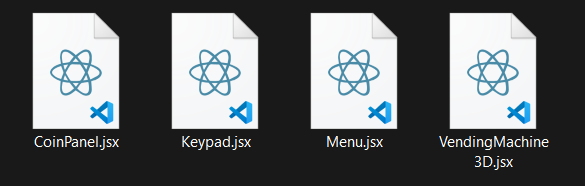

Distributeur Automatique - Documentation
Project Overview
The vending machine simulation is a web-based application designed to replicate the functionality of a physical vending machine. It allows users to interact with a 3D interface to select products, insert coins, and receive change. The backend API handles all transaction logic, ensuring smooth operations.
This project is ideal for demonstrating concepts such as object-oriented programming, API design, and frontend-backend integration.
Purpose
The primary purpose of this project is to simulate a vending machine experience in a digital environment. It aims to:
- Provide an interactive and realistic simulation of a vending machine.
- Demonstrate the integration of frontend and backend systems.
- Showcase the use of 3D models in web applications.
- Implement transaction handling, including payment processing and change calculation.
Technologies Used
Backend Technologies
The backend of the vending machine simulation is built using the following technologies:
- Node.js: A JavaScript runtime environment used to build the backend server. It provides an efficient and scalable platform for handling API requests and managing application logic.
- Express: A lightweight web application framework for Node.js, used to define API routes, handle HTTP requests, and manage middleware for the application.
These technologies ensure a fast and reliable backend capable of handling vending machine operations like product selection, payment processing, and transaction management.
Testing Tools
To test the API routes and ensure proper functionality, the following tool is used:
- Postman: A popular API testing tool used to send requests to the backend routes and verify their responses. It allows developers to test endpoints like inserting coins, selecting products, and confirming transactions efficiently.
Postman simplifies the process of debugging and validating the backend logic during development.
Frontend Technologies
The frontend of the vending machine simulation is built using modern web technologies to create an interactive and visually appealing user interface:
- React.js: A JavaScript library for building user interfaces. It is used to create the dynamic components of the vending machine, such as the 3D interface and product selection panel.
- A-Frame: A web framework for building 3D and VR experiences. It is used to render the vending machine and products in a realistic 3D environment.
- Bootstrap: A CSS framework for styling the application and ensuring responsiveness across devices. It provides pre-designed components for a clean and professional look.
- SASS: A CSS preprocessor used to write modular and maintainable styles for the application. It simplifies the process of managing complex stylesheets.
These frontend technologies work together to deliver a seamless and engaging user experience for interacting with the vending machine simulation.
UML Diagrams
Use Case Diagram
This diagram illustrates the interactions between the user and the vending machine system.
The user can perform actions like inserting money, browsing the product catalog, adding products to the cart, confirming or canceling a transaction.
The system performs internal operations such as updating the balance, verifying the balance, dispensing the product, returning the change, and resetting its state.

Sequence Diagram
This diagram details the step-by-step flow of purchasing a product from the vending machine:
- The user starts by requesting to view the product catalog.
- The user inserts coins; the system updates and displays the current balance.
- The user selects products, and the system adds them to the cart.
- Once the balance is sufficient, the user confirms the transaction.
- The system calculates change, resets internal state, dispenses the change, and finally dispenses the selected products.

Class Diagram
This diagram shows the object-oriented structure of the vending machine system, including the relationships between key classes:
- VendingMachine: The main class managing balance, cart, inventory, payments, and product dispensing.
- Cart: Holds selected products; allows adding and clearing products and calculating total amount.
- ProductInventory: Maintains available products and checks product availability.
- PaymentProcessor: Handles balance, money insertion, change calculation, and balance reset.
- Dispenser: Responsible for dispensing products and change.
- Product: Represents individual items with ID, name, and price.
- AcceptedCoins (Enumeration): Lists allowed coin denominations (e.g., 0.5MAD, 1MAD, etc.).

API
Overview: The API is responsible for handling backend operations such as managing products, processing transactions, and maintaining user balances.
File tree:

Folders
- src: Contains the main source code for the API, including all the subfolders and files required for backend functionality.
- routes: Defines the API endpoints and their logic. Each route corresponds to a specific functionality, such as inserting coins, selecting products, confirming purchases, and canceling transactions.
- models: Contains the models used in the application.
- services: Implements the core business logic for the vending machine operations. This includes managing the cart, inventory, payment processing, and dispensing products and change.
- utils: Contains utility files that provide helper functions or constants used across the application.
- assets: Stores static files such as 3D models (`.glb`) used for rendering products in the vending machine interface. Example: `objects/candy_bar.glb`, `objects/chips.glb`.
Files
- server.js: The entry point of the API. Sets up the Express server, connects to the database, and initializes middleware and routes.
- routes/VendingRoutes.js: Defines routes for vending machine operations, such as inserting coins, selecting products, confirming purchases, and canceling transactions.
- models/Product.js: Defines the schema for products, including fields like `id`, `name`, `price`, `glb` (3D model file), `position`, and `scale` for rendering in the vending machine interface.
- controllers/VendingController.js: Implements the logic for vending machine operations. Handles requests and responses for routes like inserting coins, selecting products, and confirming transactions.
- services/VendingMachineService.js: Manages the core vending machine functionality, including payment processing, product selection, and dispensing products and change.
- services/PaymentService.js: Handles payment-related operations, such as inserting money, calculating change, and managing the balance.
- services/InventoryService.js: Manages the inventory of products in the vending machine. Provides methods to check product availability and retrieve product details.
- services/DispenserService.js: Handles the dispensing of products and change. Simulates the physical dispensing process in the vending machine.
- services/CartService.js: Manages the user's cart during a transaction. Tracks selected products and calculates the total amount.
Routes Testing
List of Products: This route retrieves all available products in the vending machine. It ensures the frontend displays accurate product information, including names, prices.

- Method: GET
- Endpoint:
/api/products - Expected Response: JSON array of products with fields like
id,name,price.
Insert Coin: This route handles coin insertion by the user. It updates the backend with the amount inserted and ensures the frontend reflects the updated balance.

- Method: POST
- Endpoint:
/api/insert-coin - Request Body:
{ "amount": 5 } - Expected Response: Updated balance in JSON format, e.g.,
{ "balance": 5 }.
Select a Product: This route allows the user to select a product. It verifies if the user has sufficient balance and updates the backend accordingly.

- Method: POST
- Endpoint:
/api/select-product - Request Body:
{ "productId": "123" } - Expected Response: Confirmation of product selection or an error message if the balance is insufficient.
Confirm Transaction: This route finalizes the purchase. It deducts the product price from the balance, updates the stock, and calculates the change to be dispensed.
- Method: POST
- Endpoint:
/api/confirm-transaction - Expected Response: JSON object with fields like
dispensedProducts,changeandbalance.
Cancel: This route cancels the transaction and refunds the inserted coins. It ensures the backend resets the balance and the frontend reflects the cancellation.
- Method: POST
- Endpoint:
/api/cancel - This route empties the cart , returns a JSON object with the refunded amount, e.g.,
{ "refund": 1.25 }.
Frontend Documentation
Overview: The frontend is responsible for creating an interactive user interface for the vending machine simulation. It uses modern web technologies to render a 3D vending machine, handle user interactions, and communicate with the backend API.
File tree:


Folders
- src: Contains the main source code for the frontend application, including components, assets, and styles.
- components: Includes reusable React components such as `VendingMachine3D.jsx`, `Menu.jsx`, `CoinPanel.jsx`, and `Keypad.jsx` that form the vending machine interface.
- assets: Stores static files such as images, icons, and 3D models (`.glb`) used in the vending machine simulation.
- styles: Contains CSS and SASS files for styling the application and ensuring responsiveness.
Files
- index.js: The entry point of the React application. It renders the root component and initializes the frontend.
- App.jsx: The main application component that sets up routing and renders the vending machine interface.
- components/VendingMachine3D.jsx: Implements the 3D vending machine interface using A-Frame and React. Handles product selection, coin insertion, and cart management.
- components/Menu.jsx: Displays the menu panel for user interactions, including coin insertion, keypad input, and cart actions.
- components/CoinPanel.jsx: Handles coin insertion and animates coins being added to the vending machine.
- components/Keypad.jsx: Provides a numeric keypad for selecting products by their ID.
- assets/objects: Contains 3D models (`.glb`) for rendering products in the vending machine interface.
- assets/coins: Stores images of coins used for the coin panel and change display.
- styles/style.css: Defines global styles for the application, ensuring a consistent look and feel.
Use of A-Frame
Overview: A-Frame is a web framework for building 3D and VR experiences. It is used to render the vending machine and products in a realistic 3D environment.
- Scene Setup: Defines the 3D environment with sky and ground elements.
- Vending Machine Model: Renders the vending machine using `.glb` files.
- Product Display: Displays products as clickable 3D objects.
- Interaction: Allows users to interact with products via events like `click`.
Frontend Functions
Overview: The frontend uses several functions to interact with the backend API and manage the vending machine's state. These functions handle coin insertion, product selection, transaction confirmation, and cancellation.
- fetchBalance:
Fetches the current balance from the backend and updates the frontend state.
fetch(`${API_URL}/balance`) .then(res => res.json()) .then(data => setBalance(data.balance || 0)); - handleInsertCoin:
Handles coin insertion by sending the amount to the backend and updating the balance.
fetch(`${API_URL}/insert-coin`, { method: 'POST', headers: { 'Content-Type': 'application/json' }, body: JSON.stringify({ amount }) }) .then(res => res.json()) .then(data => { setMessage('Coin inserted.'); fetchBalance(); }); - handleSelectProduct:
Selects a product by sending its ID to the backend and updates the cart if successful.
fetch(`${API_URL}/select-product`, { method: 'POST', headers: { 'Content-Type': 'application/json' }, body: JSON.stringify({ productId }) }) .then(res => res.json()) .then(data => { if (data.success) { setCart(prev => [...prev, selectedProduct]); } else { setMessage(data.error || 'Error selecting product.'); } }); - handleConfirmPurchase:
Finalizes the purchase by sending a request to the backend. Updates the balance and displays the change.
fetch(`${API_URL}/confirm-purchase`, { method: 'POST', headers: { 'Content-Type': 'application/json' } }) .then(res => res.json()) .then(data => { if (data.success) { setChange(data.change); setBalance(data.balance); } else { setMessage(data.error || 'Purchase failed.'); } }); - handleCancel:
Cancels the transaction by sending a request to the backend. Resets the cart and refunds the balance.
fetch(`${API_URL}/cancel`, { method: 'POST' }) .then(res => res.json()) .then(data => { setMessage('Transaction cancelled.'); setChange(data.change); fetchBalance(); }); - handleReset:
Resets the frontend state, including the cart, balance, and inserted coins.
setCart([]); setBalance(0); setInsertedCoins([]); setProductNumberInput('');
Interface UI
Overview: The UI is designed to be intuitive and responsive, allowing users to interact seamlessly with the vending machine.
- Menu Panel: Displays balance, cart, and change. Includes buttons for confirming or canceling transactions.
- Keypad: Allows users to input product numbers. Includes buttons for adding products and clearing input.
- Coin Panel: Displays available coins for insertion. Animates coins being added to the vending machine.
- 3D Interface: Renders the vending machine and products. Allows users to interact with products directly.
Deployment
Setup Instructions:
- Frontend:
- Ensure Node.js and npm are installed.
- Navigate to the `frontend` folder.
- Run `npm install` to install dependencies.
- Start the development server using `npm start`.
- Access the application at `http://localhost:3000`.
- Backend:
- Ensure Node.js and npm are installed.
- Navigate to the `api` folder.
- Run `npm install` to install dependencies.
- Start the server using `node server.js`.
- Verify the API is running at `http://localhost:4200`.
- Environment Variables:
API_URL: URL of the backend API (e.g., `http://localhost:4200`).PORT: Port for the backend server (default: `4200`).
Production Deployment:
- Use a cloud provider like AWS, Azure, or Heroku.
- Set up CI/CD pipelines for automated deployment.
- Ensure environment variables are configured securely.
- Use a reverse proxy like Nginx for serving the frontend and backend.